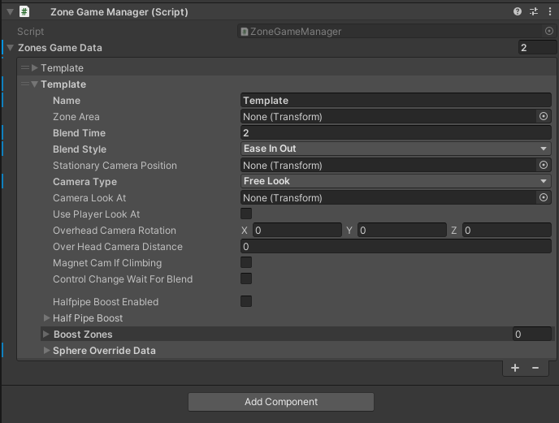

Create Camera Zones¶
There are multiple ways you could create camera zones. This is just an example of how I like to do it. This guide will show you how to setup a stationary camera zone.
1. Create The Zone Object¶
- Begin by creating a empty game object called Camera Zones. This will keep all of your zones nice and neat.

- Remember to zero out your empty game object if not already done.

- Add a plane to your Camera Zones, rename it to something meaningful
- Remove the mesh renderer component from the plane
- Change the mesh collider to convex and check the is trigger box
- Scale and position the plane in your scene, if the player is anywhere inside the trigger the zone will be active
- You should now have a scene without a layout like this. Obviously your scene will look different.

- Add a new empty gameobject with your zone as the parent, named Camera Position

- In your scene view, position your view to how you would like the camera to look. In this example I zoomed in on the zone, with a slight overhead view

- Select the Camera Position game object, then select game object->Align With View from the File Menu

2. Assign The Zone Object To The Prime Ball Controller¶
- Go to your PlayerSphere object and find Camera Zones under the Pbc Manager script component
- Click the plus sign to add a zone. You should now see 1 item in your list named Element 0. Expand Element 0 to display the configuration options.
 - Give the zone a name
- Drag the zone plane you created back in section 1 step 3 into the Zone Area
- Drag the zone camera position you created back in section 1 step 8 into the Stationary Camera Position
- Change the Camera Type to Stationary
- Your finished zone should look something like this
Your zone is finished.